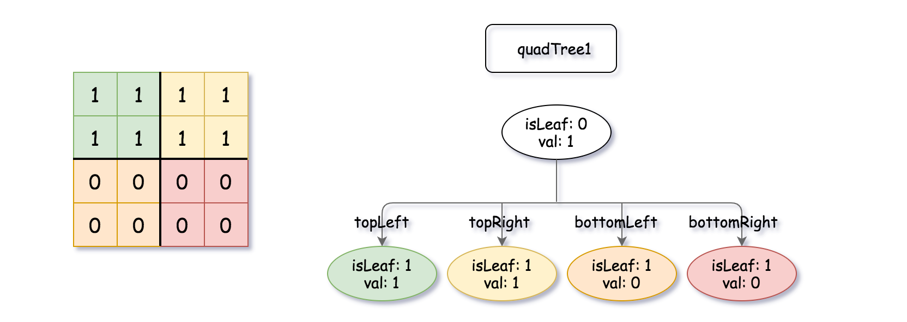
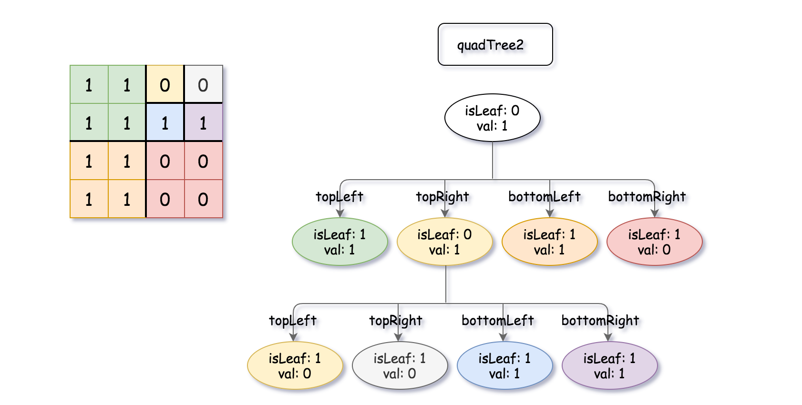
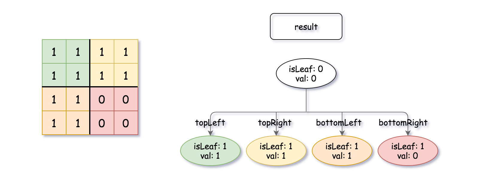

题目
558.
四叉树交集
二进制矩阵中的所有元素不是 0 就是
1。
给你两个四叉树，quadTree1 和
quadTree2。其中 quadTree1 表示一个
n * n 二进制矩阵，而 quadTree2 表示另一个
n * n 二进制矩阵。
请你返回一个表示 n * n 二进制矩阵的四叉树，它是
quadTree1 和 quadTree2
所表示的两个二进制矩阵进行 按位逻辑或运算 的结果。
注意，当 isLeaf 为 False 时，你可以把
True 或者 False
赋值给节点，两种值都会被判题机制 接受 。
四叉树数据结构中，每个内部节点只有四个子节点。此外，每个节点都有两个属性：
val：储存叶子结点所代表的区域的值。1 对应
True，0 对应 False；isLeaf: 当这个节点是一个叶子结点时为
True，如果它有 4 个子节点则为 False
。
1
2
3
4
5
6
7
8
| class Node {
public boolean val;
public boolean isLeaf;
public Node topLeft;
public Node topRight;
public Node bottomLeft;
public Node bottomRight;
}
|
我们可以按以下步骤为二维区域构建四叉树：
- 如果当前网格的值相同（即，全为
0 或者全为
1），将 isLeaf 设为 True ，将 val
设为网格相应的值，并将四个子节点都设为 Null 然后停止。
- 如果当前网格的值不同，将
isLeaf 设为 False， 将
val
设为任意值，然后如下图所示，将当前网格划分为四个子网格。
- 使用适当的子网格递归每个子节点。
new top
如果你想了解更多关于四叉树的内容，可以参考
wiki 。
四叉树格式：
输出为使用层序遍历后四叉树的序列化形式，其中 null
表示路径终止符，其下面不存在节点。
它与二叉树的序列化非常相似。唯一的区别是节点以列表形式表示
[isLeaf, val] 。
如果 isLeaf 或者 val 的值为 True
，则表示它在列表 [isLeaf, val] 中的值为 1
；如果 isLeaf 或者 val 的值为 False
，则表示值为 0。
示例 1：

qt1

qt2
输入：quadTree1 = [[0,1],[1,1],[1,1],[1,0],[1,0]]
, quadTree2 =
[[0,1],[1,1],[0,1],[1,1],[1,0],null,null,null,null,[1,0],[1,0],[1,1],[1,1]]
输出：[[0,0],[1,1],[1,1],[1,1],[1,0]]
解释：quadTree1 和 quadTree2
如上所示。由四叉树所表示的二进制矩阵也已经给出。
如果我们对这两个矩阵进行按位逻辑或运算，则可以得到下面的二进制矩阵，由一个作为结果的四叉树表示。
注意，我们展示的二进制矩阵仅仅是为了更好地说明题意，你无需构造二进制矩阵来获得结果四叉树。

qtr
示例 2：
输入：quadTree1 = [[1,0]]
, quadTree2 = [[1,0]]
输出：[[1,0]]
解释：两个数所表示的矩阵大小都为 11，值全为 0结果矩阵大小为
11，值全为 0 。
示例 3：
输入：quadTree1 = [[0,0],[1,0],[1,0],[1,1],[1,1]]
, quadTree2 = [[0,0],[1,1],[1,1],[1,0],[1,1]]
输出：[[1,1]]
示例 4：
输入：quadTree1 = [[0,0],[1,1],[1,0],[1,1],[1,1]]
, quadTree2 =
[[0,0],[1,1],[0,1],[1,1],[1,1],null,null,null,null,[1,1],[1,0],[1,0],[1,1]]
输出：[[0,0],[1,1],[0,1],[1,1],[1,1],null,null,null,null,[1,1],[1,0],[1,0],[1,1]]
示例 5：
输入：quadTree1 =
[[0,1],[1,0],[0,1],[1,1],[1,0],null,null,null,null,[1,0],[1,0],[1,1],[1,1]]
, quadTree2 =
[[0,1],[0,1],[1,0],[1,1],[1,0],[1,0],[1,0],[1,1],[1,1]]
输出：[[0,0],[0,1],[0,1],[1,1],[1,0],[1,0],[1,0],[1,1],[1,1],[1,0],[1,0],[1,1],[1,1]]
提示：
quadTree1 和 quadTree2
都是符合题目要求的四叉树，每个都代表一个 n * n
的矩阵。n == 2^x ，其中 0 <= x <= 9.
标签
树, 分治
题解
【四叉树交集】简单递归
递归
涉及树结构的应该优先想到使用递归，本题也不例外。根据或运算的性质，如果结点值为
true 那么最终结果就是 true, 若结点值为
false
那么最终结果完全取决于另一颗树的结果，据此就能得到结果。需要注意的是需要将是叶子节点且值相同的合并为一个结点。
根据此得到的树实际上与原始的两棵树是有部分结点是交叉的，所以若要求结果完全不与输入交叉，那么需要在递归的时候进行结点的复制而不能直接引用。
1
2
3
4
5
6
7
8
9
10
11
12
13
14
|
class Solution:
def intersect(self, q1: 'Node', q2: 'Node') -> 'Node':
if q1.isLeaf:
return q1 if q1.val else q2
elif q2.isLeaf:
return q2 if q2.val else q1
else:
children = self.intersect(q1.topLeft, q2.topLeft), self.intersect(q1.topRight, q2.topRight), self.intersect(q1.bottomLeft, q2.bottomLeft), self.intersect(q1.bottomRight, q2.bottomRight)
if all(map((lambda x: x.isLeaf), children)) and (all(map((lambda x: x.val), children)) or not any(map((lambda x: x.val), children))):
return Node(children[0].val, True, None, None, None, None)
return Node(False, False, *children)
|
1
2
3
4
5
6
7
8
9
10
11
12
13
14
15
16
|
class Solution {
public Node intersect(Node q1, Node q2) {
if (q1.isLeaf) return q1.val ? q1 : q2;
else if (q2.isLeaf) return q2.val ? q2 : q1;
Node tl = intersect(q1.topLeft, q2.topLeft);
Node tr = intersect(q1.topRight, q2.topRight);
Node bl = intersect(q1.bottomLeft, q2.bottomLeft);
Node br = intersect(q1.bottomRight, q2.bottomRight);
if (tl.isLeaf && tr.isLeaf && bl.isLeaf && br.isLeaf) {
if (tl.val && tr.val && bl.val && br.val) return new Node(true, true, null, null, null, null);
if (!tl.val && !tr.val && !bl.val && !br.val) return new Node(false, true, null, null, null, null);
}
return new Node(false, false, tl, tr, bl, br);
}
}
|
1
2
3
4
5
6
7
8
9
10
11
12
13
14
15
16
17
|
class Solution {
public:
Node* intersect(Node* q1, Node* q2) {
if (q1->isLeaf) return q1->val ? q1 : q2;
else if (q2->isLeaf) return q2->val ? q2 : q1;
Node* tl = intersect(q1->topLeft, q2->topLeft);
Node* tr = intersect(q1->topRight, q2->topRight);
Node* bl = intersect(q1->bottomLeft, q2->bottomLeft);
Node* br = intersect(q1->bottomRight, q2->bottomRight);
if (tl->isLeaf && tr->isLeaf && bl->isLeaf && br->isLeaf) {
if (tl->val && tr->val && bl->val && br->val) return new Node(true, true, nullptr, nullptr, nullptr, nullptr);
if (!tl->val && !tr->val && !bl->val && !br->val) return new Node(false, true, nullptr, nullptr, nullptr, nullptr);
}
return new Node(false, false, tl, tr, bl, br);
}
};
|
1
2
3
4
5
6
7
8
9
10
11
12
13
14
15
16
17
18
|
var intersect = function(q1, q2) {
if (q1.isLeaf) return q1.val ? q1 : q2;
else if (q2.isLeaf) return q2.val ? q2 : q1;
let tl = intersect(q1.topLeft, q2.topLeft);
let tr = intersect(q1.topRight, q2.topRight);
let bl = intersect(q1.bottomLeft, q2.bottomLeft);
let br = intersect(q1.bottomRight, q2.bottomRight);
if (tl.isLeaf && tr.isLeaf && bl.isLeaf && br.isLeaf) {
if (tl.val && tr.val && bl.val && br.val) return new Node(true, true, null, null, null, null);
if (!tl.val && !tr.val && !bl.val && !br.val) return new Node(false, true, null, null, null, null);
}
return new Node(false, false, tl, tr, bl, br);
};
|
1
2
3
4
5
6
7
8
9
10
11
12
13
14
15
16
|
public class Solution {
public Node Intersect(Node q1, Node q2) {
if (q1.isLeaf) return q1.val ? q1 : q2;
else if (q2.isLeaf) return q2.val ? q2 : q1;
Node tl = Intersect(q1.topLeft, q2.topLeft);
Node tr = Intersect(q1.topRight, q2.topRight);
Node bl = Intersect(q1.bottomLeft, q2.bottomLeft);
Node br = Intersect(q1.bottomRight, q2.bottomRight);
if (tl.isLeaf && tr.isLeaf && bl.isLeaf && br.isLeaf) {
if (tl.val && tr.val && bl.val && br.val) return new Node(true, true, null, null, null, null);
if (!tl.val && !tr.val && !bl.val && !br.val) return new Node(false, true, null, null, null, null);
}
return new Node(false, false, tl, tr, bl, br);
}
}
|
如果对你有帮助的话，请给我点个赞吧~
欢迎前往 我的博客
或 Algorithm -
Github 查看更多题解